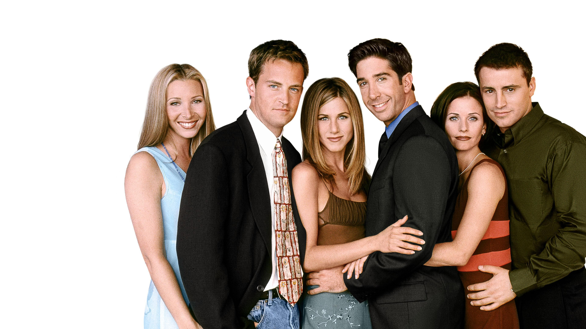

Jennifer Aniston interpreta a Rachel Green, una entusiasta de la moda y la mejor amiga de Mónica del instituto. Rachel y Ross Geller tienen en una relación intermitente durante la serie. El primer trabajo de Rachel es como camarera en la cafetería Central Perk, pero luego se convierte en ayudante de compras en Bloomingdale's y en compradora personal en Polo Ralph Lauren en la temporada 5. Aniston ya había aparecido en varios pilotos de comedia sin éxito antes de estar en el reparto de Friends.
Courteney Cox interpreta a Monica Geller, la "madre" del grupo, es una maniática de la limpieza y conocida por su obsesión por competir. Mónica, a menudo, recibe bromas de los demás por haber tenido sobrepeso cuando era niña, especialmente de su hermano Ross. Mónica trabaja como chef y cambia su lugar de trabajo a menudo durante la serie. Se casa con su amigo Chandler Bing en la séptima temporada. Cuando fue elegida inicialmente, Cox tenía la carrera de más alto perfil que los otros actores, después de haber aparecido en Ace Ventura: Pet Detective y Family Ties.
Lisa Kudrow interpreta a Phoebe Buffay, una masajista y músico excéntrica. Phoebe tuvo una vida difícil. Su padre la abandonó cuando era un bebé y su madre se suicidó. Se quedó sin casa a los 14 años y vivió en la calle. Kudrow anteriormente había interpretado a una camarera, Ursula Buffay, en Mad About You, la cual aparece como un personaje recurrente en varios episodios de Friends como gemela de Phoebe. Antes de su carrera como actriz, Kudrow era gerente de oficina e investigadora para su padre, un especialista en dolor de cabeza.
Matt LeBlanc interpreta a Joey Tribbiani, un actor y amante de la comida quien se hace famoso por su papel en la novela Days of Our Lives como el Doctor Drake Ramoray. Joey es un mujeriego con muchas ligues a lo largo de la serie, y se enamora de Rachel en la octava temporada. Antes de su papel en Friends, LeBlanc apareció como un personaje secundario en la comedia de situación Married... with Children, y como protagonista en Top of the Heap y Vinnie & Bobby.
Matthew Perry interpreta a Chandler Bing, un ejecutivo de análisis estadístico y reconfiguración de datos para una gran corporación multinacional. Chandler renuncia a su trabajo y se convierte en un redactor en una agencia de publicidad durante la novena temporada. Chandler es conocido por su sarcástico sentido del humor, y se casa con su amiga Mónica. Como Aniston, Perry había aparecido en varios pilotos sin éxito antes de entrar en el reparto.
David Schwimmer interpreta a Ross Geller, un paleontólogo doctorado, que trabaja en el museo de Prehistoria, y luego como profesor de paleontología en la Universidad de Nueva York. Ross tiene tres matrimonios fallidos durante la serie, y tiene una relación de intermitente con Rachel. Antes de estar en el reparto de Friends, Schwimmer interpretó papeles de menor importancia en The Wonder Years y NYPD Blue.